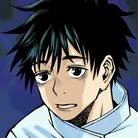

Yuta Okkotsu (乙おっ骨こつ憂ゆう太た Okkotsu Yūta?) is a major supporting character in the Jujutsu Kaisen series and the main protagonist of its prequel series, Jujutsu Kaisen 0: Jujutsu High.

Yuta Okkotsu

Yuji Itadori
Yuji Itadori (虎いた杖どり悠ゆう仁じ Itadori Yūji?) is the main protagonist of the Jujutsu Kaisen series. He is the son of Jin Itadori and Kaori Itadori, and the grandson of Wasuke Itadori.

Megumi Fushiguro
Megumi Fushiguro (伏ふし黒ぐろ恵めぐみ Fushiguro Megumi?) is the deuteragonist of the Jujutsu Kaisen series. He is a grade 2 jujutsu sorcerer and first-year student at Tokyo Jujutsu High alongside Yuji Itadori and Nobara Kugisaki.

Nobara Kugisaki
Nobara Kugisaki (釘くぎ崎さき野の薔ば薇ら Kugisaki Nobara?) is the tritagonist of the Jujutsu Kaisen series. She is a first-year student and grade 3 jujutsu sorcerer at Tokyo Jujutsu High studying under Satoru Gojo alongside Yuji and Megumi.

Gojo Satoru
Satoru Gojo (五ご条じょう悟さとる Gojō Satoru?) is one of the main protagonists of the Jujutsu Kaisen series. He is a special grade jujutsu sorcerer and widely recognized as the strongest in the world. Satoru is the pride of the Gojo Clan, the first person to inherit both the Limitless and the Six Eyes in four hundred years.